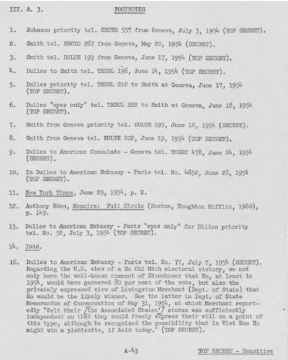
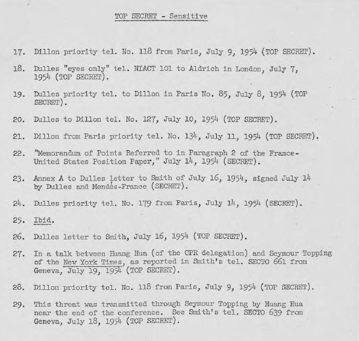

Trong khoảng thời gian từ giữa tháng Sáu và kết thúc của Hội nghị vào ngày 21 tháng 7, ngoại giao Mỹ làm việc với liên minh phương Tây thống nhất đằng sau một hiệp ước phòng thủ Đông Nam Á và hợp nhất trong một mặt trận ngoại giao thống nhất phương Tây tại Genève để đạt giải quyết tốt nhất có thể. Trong quá trình này, liên minh phương Tây dần dần kết dính với nhau. Kết quả là đã đạt được sự hợp tác Anh-Pháp không chỉ đối với các khái niệm về một hiệp ước an ninh khu vực, mà tao được một thế đứng đàm phán vững chắc đối mặt với những người cộng sản. Ngoài ra Mỹ, mặc dù ở vị trí riêng rẽ, vào cuối tháng Sáu đã tuân thủ một giải pháp chia cắt Việt Nam và tổ chức việc "thống nhất cuối cùng của Việt Nam bằng phương tiện hòa bình" (theo US-UK biên bản ghi nhớ “bảy điểm” ngày 29 tháng Sáu, đưo8`ng lối công khai của chúng ta tại Hội nghị làm cho những người cộng sản không rõ đâu là các điều khoản mà chúng tạ có thể thực sự chấp nhận. Về phần của chúng ta, thống nhất hành động là một vấn đề đã bị chết yểu vào giữa tháng Sáu, nhưng các nhà đàm phán cộng sản không thể biết được điều này. Kết quả là, họ có thể bị ảnh hưởng theo một hướng giải quyết với niềm tin rằng việc kéo dài hơn nữa các cuộc hội đàm, chỉ giúp củng cố sự thống nhất đoàn kết của phương Tây, có lẽ họ sẽ kết hợp chung trong một phản ứng thống nhất ở Đông Dương như trước đây Mỹ đã đề đạt, và rất có thể cả ba nước Đông Dương được đưa vào hiệp ước an ninh mà Mỹ đề xuất.
Các nhà đàm phán cả Pháp và Anh đã sử dụng tuyệt vời của tình trạng nước đôi của Mỹ. Trưởng đoàn đại biểu Pháp, Jean Chauvel, nói với một đại biểu Nga, Kuznetsov, ví dụ, đề xuất của Pháp chia cắt Việt Nam tại vĩ tuyến 18 có lẽ sẽ dễ được các thành viên hội nghị chấp nhận hơn so với đòi hỏi không hợp lý của Việt Minh là vĩ tuyến 13. Chauvel nói thêm là đường chia cắt theo Pháp [đề nghị], sẽ ngăn chặn nguy cơ quốc tế hóa cuộc xung đột. 1/ Eden cũng sử dụng mối đe dọa ám chỉ sự tham gia của Hoa Kỳ. Trong thời gian vào cuối tháng, ông cảnh báo Chu [Ân Lai] "một lần nữa" về sự nguy hiểm vốn có trong tình hình Đông Dương, có thể dẫn đến các hậu quả không thể đoán trước và nghiêm trọng. Khi Chu cho biết ông đã trông chờ Anh giúp để ngăn chặn điều này xảy ra, Bộ trưởng Ngoại giao [Anh] trả lời là Chu đã nhầm lẫn, khi nước Anh sẽ đứng về phía Mỹ trong cuộc thách đấu. 2/ Và Bidault và Smith, vào giữa tháng Sáu, đã đồng ý theo quan điểm mong muốn nguyên thủy của Trung-Xô để giữ cho Hội nghị tiếp tục, Trung Quốc lo ngại về các căn cứ Mỹ tại Lào và Campuchia sẽ không bị tháo gỡ.3/
Anh dường như đã đóng một vai trò đặc biệt quan trọng trong việc khai thác ý định mập mờ của Mỹ để dành những thắng lợi ngoại giao. Tại Hội nghị, Eden đã tiếp xúc gần gũi với Molotov và Chu Ân Lai, và rõ ràng đã được sự tin tưởng và tôn trọng của họ. Rõ ràng là ông đã được xem như là một yếu tố hòa hoãn mà mọi người có thể nhờ đến (như Chu Ân Lai đã nói) để ảnh hưởng kéo Hoa Kỳ ra khỏi những hành động hấp tấp vội vàng có thể phá tan Hội nghị. Thái độ cư xử của Eden, do đó, đã phục vụ như một phong vũ biểu cho những người Cộng sản trong viễn ảnh đạt được thỏa thuận với phương Tây để giải quyết vấn đề. Khi người Anh đồng ý tham gia trong các cuộc đàm phán cùng các giới chức của giữa năm cường quốc quân sự [Mỹ, Pháp, Anh, Úc và Tân Tây lan] tại Washington (3-9 tháng Sáu), và khi Eden và Churchill đã tới Washington vào cuối tháng sáu để hội đàm với Dulles và Eisenhower, những người cộng sản có thể tin rằng Vương quốc Anh đã trải qua một số loại đánh giá lại thái độ của mình đối với đề nghị của Mỹ về một liên minh Đông Nam Á. Cảnh báo tiềm ẩn của việc Vương quốc Anh tham gia “thống nhất hành động” mà họ đã từ chối trước đây, việc có hoặc không có ý định đó với các nhà lãnh đạo Anh hiện nay, những việc đó không thể được Moscow và Bắc Kibỏ qua.
Đến giữa tháng Sáu, có vẻ như có rất ít lý do để hy vọng vào Hội nghị Genève, ngay cả khi phải triệu tập lại vào tháng Bảy, để thấy bất kỳ bước đột phá đáng kể nào từ phía cộng sản. Đến mức mà chính phủ mới của Pháp đã quyết định một cam kết sẽ giải quyết chung cuộc vào ngày 20 tháng 7, tiếp tục "ngầm" các cuộc thảo luận quân sự với Việt Minh, nỗ lực ngoại giao của Mỹ được tập trung vào việc đẩy người Anh đồng ý về một hệ thống hiệp ước [phòng thủ] khu vực Đông Nam Á, có hiệu lực, đảm bảo sự an toàn của những khu vực còn lại không lọt vào tay cộng sản tiếp sau việc giải quyết [chiến tranh Đông Dương]. Ngày 14 tháng 6, Dulles quan sát thấy rằng các sự kiện tại Genève rõ ràng là phải "làm sao để đáp ứng sự khăng khăng của Anh rằng họ không muốn thảo luận về hành động tập thể cho đến khi hoặc hội nghị Genève chấm dứt hoặc ít nhất là kết quả của Genève đã được biết đến." Dulles giả định rằng sự ra đi của Eden là "bằng chứng cho thấy là không còn lý do chính đáng nào để tiếp tục trì hoãn các cuộc đàm phán tập thể về việc phòng thủ khu vực Đông Nam Á". 4/
Trong khi những kế hoạch đã đưa ra trước cho báo chí với chuyện liên minh khu vực, nhiều biến chuyển quan trọng đã xảy ra tại Hội nghị. Giảp pháp chia vùng đã được phía cộng sản giới thiệu vào cuối tháng Năm với một công thức thỏa hiệp, đã được sự quan tâm nghiêm túc của người Pháp. Được Smith thông báo về điều này, Dulles đã nhắc lại quan điểm là Mỹ có thể không liên kết mình với chuyện bán vùng đồng bằng [sông Hồng?] nhiều hơn chúng ta đã có thể dự kiến (như Jean Chauvel đã thúc giục) để "bán" vùng không cộng sản của Việt Nam. 5/
Hai tiêu chuẩn về khái niệm phân vùng đã được đưa ra trong cùng một thời kỳ. Hội nghị các quan chức của năm cường quốc quân sự [Mỹ, Pháp, Anh, Úc và Tân Tây lan] ở Washington đã kết thúc vào ngày 09 Tháng Sáu với một báo cáo xem xét tuyến Thakhek-Đồng Hới (nằm giữa vĩ tuyến 17 và 18 – Thakkek là Thà Khẹt bên Lào) là tuyến có thể phòng thủ trong trường hợp Việt Nam bị chia cắt. 6/ Ngoài ra, Chauvel đã nói với U. Alexis Johnson, lúc ấy là một thành viên của phái đoàn Mỹ, rằng việc Pháp đã bỏ ý tưởng được tán tỉnh trước đây là có một hoặc nhiều vùng cho mỗi bên Bắc và Nam của Việt Nam. Chauvel cho thấy chính phủ của ông đã quyết định bỏ Hải Phòng hơn là chấp nhận một vùng đất Việt Minh ở miền Nam, nếu sự lựa chọn đó được áp dụng. 7/ Các báo cáo của hội nghị và việc Paris thay đổi tâm điểm của khái niệm về vùng đã có hiệu lực thuyết phục một số người là nếu việc chia cắt được thông qua, nó có thể cho phép việc phòng thủ quân sự vững chắc cho miền Nam Việt Nam.
Ở khu vực khác, phe cộng sản đã thừa nhận - với đề nghị của Chu Ân Lai trong phiên họp Hội nghị giới hạn ngày 16 Tháng Sáu - Lào và Campuchia là những vấn đề riêng biệt với Việt Nam. Và trong một cuộc trò chuyện với Smith, Molotov thêm rằng Phạm Văn Đồng đã cho thấy những bằng chứng là Đồng đã sẵn sàng rút "chí nguyện quân" Việt Minh ra khỏi Lào và Cam-pu-chia. 8/ Nhưng, ở đây là việc chia cắt, các sáng kiến cộng sản chỉ đáp ứng một phần nhỏ quan niệm của người Mỹ về những điều khoản “có thể chấp nhận được”. Cho đến khi lực lượng chính quy Việt Minh đã hoàn toàn ra khỏi Lào và Cam-pu-chia, cho đến khi các yếu tố con rối Khmer Tự Do và Pathet Lào được giải giáp hoặc rút đi, và cho đến khi chính phủ Hoàng gia được quyền tìm kiếm sự hỗ trợ bên ngoài để tự vệ đã được khẳng định, thì Mỹ chỉ nhìn thấy ít tiến bộ trong tuyên bố của Chu Ân Lai.
Cái u ám trong giới chức Mỹ tăng dày lên đáng kể vào cuối tháng Sáu. Viêc không thể giải quyết tiếp tục trên bàn Hội Nghị cùng với cảm giác mạnh mẽ ở Washington rằng phái đoàn Pháp từ nay do Thủ Tướng Pierre Mendes-France chịu trách nhiệm (vào ngày 18 tháng 6), có thể sẽ kết thúc giải quyết ngay sau khi Hội nghị triệu tập lại, đã khiến Dulles cảnh cáo Smith không nên tham gia vào ủy ban làm việc (như Pháp đề xuất) vì nó sẽ hiện thân như việc Mỹ liên kết với bất kỳ quyết định cuối cùng nào. "Suy nghĩ của chúng tôi hiện nay", Dulles gửi điện cho Smith ngày 24 tháng 6, “là vai trò của chúng tôi tại Genève sẽ sớm được giới hạn như người quan sát.." 9/
Trong khi Mỹ muốn cắt giảm sự tham gia của mình vào quá trình Hội nghị, Pháp hy vọng có được, như trước đây, đủ viện trợ để củng cố vị thế đàm phán của mình khi đối mặt với áp lực của cộng sản. Như vậy, ngày 26 tháng 6, Henri Bonnet gửi một bản ghi nhớ từ chính phủ của ông cho Dulles và Eden, ghi nhận những khó khăn của Pháp. Người Pháp muốn "đảm bảo cho Nhà nước Việt Nam một vùng lãnh thổ chắc chắn nhất có thể”, nhưng Việt Minh không có những nhượng bộ ở vùng đồng bằng Bắc Bộ, và có khả năng là người Việt ở Sài Gòn sẽ phản đối dữ dội về một sự sắp xếp phân vùng. Chính phủ Pháp, do đó, hy vọng rằng Hoa Kỳ có thể tìm thấy một cách nào đó để hỗ trợ nó trong cả hai hướng: thứ nhất, Mỹ và Anh có thể ra tuyên bố sau cuộc hội đàm sắp tới của họ ở Washington sẽ "tuyên bố bằng cách này hay cách khác, nếu không thể để đạt được một giải quyết hợp lý tại Hội nghị Genève, kết quả là quan hệ quốc tế sẽ bị ảnh hưởng trầm trọng ", thứ hai, Mỹ có thể can thiệp với Việt Nam để tư vấn cho họ không phản đối chống lại giải pháp [phân vùng] mà thực sự giảp pháp đó là lợi ích tốt nhất cho họ. 10/
Đề xuất thứ hai là không bao giờ được xem xét nghiêm trọng, đối với Mỹ đã không muốn bị gắn kết với một giải pháp sẽ nhượng lãnh thổ cho Việt Minh. Việc đầu tiên, tuy nhiên, được thực thi khi Churchill và Eden đến Washington ngày 24 tháng 6. Bốn ngày sau, Anh và Mỹ đã đưa ra một tuyên bố chung cảnh báo: "nếu tại Genève Chính phủ Pháp phải đối mặt với những đòi hỏi ngăn chặn một thỏa thuận chấp nhận được về Đông Dương, tình hình quốc tế sẽ bị trầm trọng nặng nề hơn" 11/
Kết quả ngay lập tức, nhiều hơn cả quá trình đàm phán [đến lúc ấy], là thỏa thuận chưa công bố giữa hai nước trên một số nguyên tắc mà nếu các điều khoản đó đưa tới thỏa thuận chung cuộc, nó sẽ cho phép London và Washington "tôn trọng" các hiệp ước đình chiến. Các nguyên tắc, sau đó được biết đến như là Bảy điểm, đã được thông báo cho Pháp. Đó là: 12/
Mặc dù thỏa thuận về bảy điểm đại diện cho một cái gì đó như một chiến thắng ngoại giao của Mỹ (với ngoại lệ quan trọng của điểm 2, Mỹ lần đầu tiên thừa nhận rằng việc phân vùng là không thể tránh được), Hoa Kỳ với bất cứ cách nào cũng không tin rằng người Anh sẽ thực sự tuân thủ những thỏa thuận tương đối khó khăn mới khi đạt được "... Chúng tôi có một ấn tượng riêng biệt," Dulles đã viết, "rằng cái nhìn của Anh [về biên bản ghi nhớ bảy điểm này] chỉ đơn thuần là một giải pháp tối ưu và họ sẽ không khuyến khích người Pháp đưa ra ra một giải pháp tốt như thê ". Ông Ngoại Trưởng quan sát thấy rằng người Anh, trong các cuộc đàm phán, đã giải quyết cho thỏa thuận "tôn trọng" các điều khoản cuối cùng, họ thích cái gì đó mạnh mẽ hơn, và trong thực tế "muốn bày tỏ rằng [thỏa thuận] Bảy điểm chỉ đơn thuần là một 'hy vọng' mà không có bất kỳ dấu hiệu vững chắc nào về phần của chúng ta. " Hoa Kỳ, đã khá đứng sang một bên đối với những gì đã được nói trong bảy điểm," không muốn có liên quan dưới bất cứ cách thức nào với một giải quyết cụ thể là sút giảm so với biên bản ghi nhớ Bảy điểm." 13/ Khả năng rút quân đơn phương vẫn được "nhận được rất nhiều sự cân nhắc", Dulles báo cáo, 14/ ngay cả khi Bảy điểm đã được thoả thuận.
Mặc dù nhiều lo ngại về tính khả thi về việc thực hiện Bảy điểm, Mỹ vẫn hy vọng có được sự chấp thuận của Pháp. Ngày 6 tháng 7 điện tín do Dillon gửi liên quan đế phản ứng của Pháp [về kế hoạch Bảy điểm] đã đưa cho ông bởi Parodi, Tổng thư ký nội các. Ngoại trừ điểm 5 liên quan đến cuộc bầu cử, người Pháp đều thỏa thuận. Họ đã nhầm lẫn về một cuộc xung đột rõ ràng giữa việc tổ chức cuộc bầu cử và điểm 4, theo đó quy định chính trị, bao gồm cả các cuộc bầu cử sẽ không gây ra nguy cơ làm mất phần Việt Nam còn lại. Ngoài ra, họ cảm thấy ý định của Mỹ chỉ đơn thuần là "tôn trọng" bất kỳ thỏa thuận là một thuật ngữ quá yếu, và yêu cầu làm rõ ý nghĩa của nó. 15/
Dulles trả lời ngày hôm sau cho cả hai vấn đề. Điểm 4 và 5 không mâu thuẩn lẫn nhau, ông nói. Rất có thể thỏa thuận phù hợp với bảy điểm vẫn vẫn không ngăn cản được việc Đông Dương sẽ bị cộng sản hóa. Điều quan trọng, do đó, là để sắp xếp cho cuộc bầu cử quốc gia trong một cách mà có thể giúp cho Quốc Gia Việt Nam một chút say mê về hơi thở tự do:
"... Một sự thật là các cuộc bầu cử chắc chắn cuối cùng cũng sẽ đưa đất nước Việt Nam thống nhất theo Hồ Chí Minh. Với sự thật này, quan trọng trên hết là làm cho tất cả các cuộc bầu cử được tổ chức sau khi có thoả thuận ngừng bắn càng trễ càng tốt và trong điều kiện không [ai] bị ép buộc hăm dọa để giúp cho các yếu tố dân chủ [ở miền Nam Việt Nam] có những cơ hội tốt nhất. "
Và cho đến nay hai chữ "tôn trọng" liên quan đến thỏa thuận, với Mỹ và Anh nó có nghĩa là:
"sẽ không phản đối một giải pháp phù hợp với bảy điểm... Tất nhiên không có nghĩa là chúng tôi sẽ đảm bảo nhiều cho thỏa thuận hay chúng tôi nhất thiết sẽ hỗ trợ công khai. Chúng tôi cho rằng 'tôn trọng' như một từ ngữ mạnh mẽ như chúng ta có thể sử dụng trong hoàn cảnh... 'Tôn trọng' cũng có nghĩa là chúng tôi sẽ không kiếm cách trực tiếp hoặc gián tiếp làm xáo trộn thỏa thuận bằng vũ lực." 16/
Trong Bảy điểm, sự giải thích rõ ràng của Dulles về quan điểm của Mỹ về cuộc bầu cử tại Việt Nam, và việc phân định của ông về nghĩa vụ của Hoa Kỳ đối với một giải pháp chung cuộc làm người Pháp hài lòng. Tuy nhiên đối với Paris, để vị trí cứng rắn của Hoa Kỳ có ảnh hưởng đến Hội nghị, phải được bổ sung bởi đại diện ở cấp cao. Nếu không, [Thủ Tướng] Mendes-France lập luận rằng người Pháp không thể xuất hiện như một mặt trận mạnh mẽ khi Molotov và Chu Ân Lai quay trở lại [Hội Nghi] trong vài tuần tới. Nhấn mạnh với Mỹ, Mendes-France khẳng định vị trí thương lượng của Pháp là phù hợp chính xác với Bảy điểm và không chênh lệnh gì nhiều với chúng, ông nói với một thành viên của Đại sứ quán Mỹ ở Paris, rằng sự hiện diện của Ngoại Trưởng hoặc một Phó Bộ Trưởng [Ngoại Giao] là "hoàn toàn thiết yếu và cần thiết " 17/.
Mỹ vẫn phản đối bất kỳ đề nghị nào có ngụ ý đến sự chấp nhận [của Mỹ] về các điều khoản cuối cùng. Trong khi thừa nhận những khó khăn của Mendes-France trong việc thực hiện [thương thảo] gần như một mình, Dulles tin tưởng với chắc chắn rằng Pháp sẽ ký kết bằng cách chấp nhận một giải pháp không đạt yêu cầu của Mỹ, dù có hoặc không có việc phái đoàn Hoa Kỳ được nâng cấp. 18/ Hơn nữa, Mỹ gửi Smith hay Dulles trở lại Genève cũng chỉ để thấy người Pháp bị buộc phải đàm phán một thỏa thuận không thể chấp nhận được, lúc ấy Washington sẽ phải tách mình ra [không dính phần đến giải pháp] một cách "mà nó sẽ gây ra sự phẫn nộ sâu sắc của người Pháp, [họ] xem đó như một một phần nỗ lực của chúng ta để ngăn chặn vào phút cuối một nền hòa bình mà họ rất mong muốn, có thể với "chấn thương không thể khắc phục trong quan hệ Pháp-Mỹ..." 19/
Ngày 10 Tháng Bảy, phản biện về những biện hộ của Mendes-France đã tăng lên mạnh mẽ qua một công điện trực tiếp mà Bộ Trưởng gửi cho Thủ tướng Pháp. Dulles tuyên bố rằng sự hiện diện đại biểu cao cấp phương Tây của Ba Cường Quốc tại Genève không là một "thay thế cho một thỏa thuận đã rõ ràng về quan điểm chung trong đó bao gồm thỏa thuận là những gì sẽ xảy ra nếu vị trí đó không được chấp nhận bởi những người Cộng sản". Phủ nhận rằng một mặt trận thực sự đoàn vẫn kết tồn tại ngay cả với những biên bản ghi nhớ Bảy điểm, Dulles đã nói rằng Bảy điểm dường như là “một giải pháp tối ưu " không chỉ đối với người Anh, nhưng cũng không kém cho người Pháp. Ông trích dẫn Pháp đã sẵn sàng cho phép lực lượng cộng sản được duy trì ở miền bắc Lào, chấp nhận một đường phân giới cắm mốc "sâu đáng kể về phía Nam của Đồng Hới", trung lập hóa và phi quân sự hóa Lào và Cam-pu-chia, và cho phép các "cuộc bầu cử sớm và chuẩn bị tệ hại và giám sát tệ hai đến nỗi có nguy cơ mất toàn bộ khu vực vào tay cộng sản…" những gì Dulles nói, minh họa của một" quá trình đang teo tóp đi ", khi tích lũy, nó có thể phá hủy mục đích của Bảy điểm.
Như vậy, tin tưởng rằng người Pháp đã đi quá xa về phía vô hiệu hóa một số quy định chủ yếu của biên bản ghi nhớ của Mỹ-Anh, Dulles nhắc lại vị thế đã có từ lâu rằng Mỹ có dành quyền ”không xác nhận một giải pháp mà dường như đối với chúng tôi, nó sẽ gây ra những hư hại nghiêm trọng trên một số nguyên tắc mà Mỹ tin rằng, đối với tôi, phải được giữ gìn không bị hư hại, nếu cuộc đấu tranh của chúng ta chống lại cộng sản muốn được theo đuổi thành công." Dulles thêm rằng vị trí của Hoa Kỳ đã tạo ra sự không chắc chắn trong tâm trí của kẻ thù "đã có thể tăng cường sức mạnh của ông nhiều hơn so với sự hiện diện của chúng tôi tại Genève..." 20/
Mendes-France, trong thư trả lời, đã tuyên bố rằng Pháp sẽ không chấp nhận những gì không thể chấp nhận được cho Mỹ. 21/ Rõ ràng, động thái này đã có một số ảnh hưởng đến Dulles, ông đã bay đến Paris để hội đàm và dẫn đến một sự đồng tình Pháp-Mỹ ủng hộ của biên bản ghi nhớ của Mỹ và Anh. 22/ Ngoài ra, Mendes-France và Dulles đã ký kết trong cùng ngày (ngày 14 tháng 7) văn bản tái khẳng định quan điểm của Mỹ tại hội nghị là "một quốc gia thân thiện" có vai trò, phụ thuộc vào các bên không cộng sản, các nước Đông Dương và Pháp. Văn bản này đã mô tả Bảy điểm như là những gì chấp nhận được cho các "quốc gia chính có quan tâm " và như là những gì mà người Mỹ có thể "tôn trọng." Tuy nhiên, nếu các điều khoản cuối cùng được ký mà khác biệt rõ rệt với Bảy điểm, Mỹ sẽ không bị yêu cầu và cũng không dự kiến là sẽ chấp nhận chúng, và "có thể công khai tách mình ra khỏi các điều khoản đã bị làm khác”. Dulles tiếp tục nhận được từ Pháp một số các bảo đảm nhất định về phối hợp hành động bất kể kết quả của hội nghị. Văn bản tuyên bố về vị trí của Mỹ "để tìm kiếm với các quốc gia quan tâm khác, một hiệp hội quốc phòng tập thể được thiết kế để bảo vệ, chống lại xâm lược trực tiếp và gián tiếp, tính toàn vẹn các nước phi cộng sản" ở khu vực của Đông Nam Á sau bất kỳ giải quyết nào. " 23/
Tất cả trừ một vấn đề, Mỹ và Pháp đã hoàn toàn vào cùng một thế chiến lược đàm phán. Đó là chiến lược, nếu tôn trọng, chẳng những sẽ ngăn chặn việc bán đứt cho cộng sản, mà còn cung cấp một khung thảo luận cho Đồng minh để họ có hay không giải quyết được việc ký kết. Điểm khác biệt là Mendes-France tiếp tục khẳng định rằng phái đoàn của ông sẽ được hỗ trợ bởi sự hiện diện của chính Dulles. Viết cho Dulles về sự hiểu biết của ông đối với văn bản Bảy điểm vừa mới được ký, Thủ tướng Pháp nói thêm:
".. Thực vậy, tôi có mọi lý do để nghĩ rằng sự vắng mặt của ngài sẽ được diễn dịch một cách chính xác rằng đã thể hiện, trong thực tế, rằng ngài không chấp thuận hội nghị và tất cả mọi thứ mà nó có thể thực hiện được. Không chỉ những người đang chống lại chúng ta tìm thấy trong đó sự xác nhận của hậu ý không tốt mà họ gán ghép cho chính phủ của ngài liên quan đến việc tái lập hòa bình ở Đông Dương nhưng nhiều người khác sẽ đọc nó một dấu hiệu chắc chắn của một sự chia rẽ của các cường quốc phương Tây. " 24/
Vì một lý do không rõ ràng, ý kiến về việc cần một giới chức cao cấp [Mỹ] đại diện tại Genève của Mendès-France đã không được chấp nhận thuận lợi bởi Washington. Dulles đã có thể thông báo cho Mendès-France vào ngày 14 tháng 7:
"Dưới ánh sáng của những gì ngài đã nói và sau khi tham khảo ý kiến với Tổng thống Eisenhower, tôi vui mừng là có thể thông báo cho ngài rằng Tổng thống và tôi đang yêu cầu Phó Bộ Trưởng Ngoại Giao, Đại tướng Walter Bedell Smith, chuẩn bị quay lại tùy thuận tiện sớm nhất của ông ấy để đến Genève hầu chia sẻ công việc của hội nghị trên cơ sở của sự hiểu biết mà chúng ta đã đạt được. " 25/
Lần đầu tiên kể từ giữa năm 1953, Mỹ và Pháp đã cùng thắt chặt tham gia vào một mặt trận chung về Đông Dương.
Ngày 16 tháng 7, Smith đã nhận được một số hướng dẫn mới dựa trên thỏa thuận Bảy điểm Mỹ-Pháp. Sau khi nhắc lại vai trò thụ động chính thức Hoa Kỳ tại Hội nghị, Dulles nói với Phó Bộ Trưởng Theo (1) rằng nếu giải pháp có thể đạt được, ông phải đưa ra một tuyên bố đơn phương (hoặc, nếu có thể, đa phương) rằng giải pháp đã "phù hợp đáng kể" với bảy điểm (2) rằng" Hoa Kỳ sẽ, tuy nhiên, sẽ không là người đồng ký kết với những người Cộng sản trong bất kỳ Tuyên bố nào ", (3) rằng Mỹ không nên bị đặt ở một vị trí mà nó có thể bị sắp xếp để chịu trách nhiệm về việc bảo đảm thành quả của Hội Nghị; (4) Smith được chỉ đạo là phải nỗ lực truyền đạt các ý tưởng này cho các "nhà đàm phán tích cực" (Pháp, Campuchia, Lào, và Việt Nam); và (5) rằng Mỹ phải tránh cho phép người Pháp tin rằng một sự cố các cuộc đàm phán là do Mỹ tư vấn hoặc áp lực, do đó làm cho Hoa Kỳ trong một mặt nào đó về mặt đạo đức bắt buộc phải can thiệp quân sự vào Đông Dương. Dulles nhấn mạnh vào điểm chót là Hoa Kỳ "không được chuẩn bị tại thời điểm hiện tại để đưa ra bất kỳ cam kết rằng nó sẽ can thiệp vào chiến tranh nếu Hội nghị Genève thất bại..." 26/ Quyết định này, tất nhiên, những người cộng sản tại Genève vẫn không biết đến, vẫn tiếp tục suy đoán về ý định của Mỹ.
Ngay sau khi các cuộc đàm phán giữa Dulles-Bidault ở Paris (13-14 tháng Bảy), việc trở lại của Smith dường như đã được giải thích bởi người Trung Quốc, và cũng không nghi ngờ gì là của Nga, đây là một dấu hiệu của một mặt trận thống nhất của phương Tây tại Hội nghị. 27/ Khi lấy thế chung qua những gì Mendes-France đã công khai nói với Quốc hội về ý định của mình để yêu cầu lệnh động viên trong trường hợp thời hạn ngày 20 tháng Bảy của mình trôi qua mà không đạt được một giải quyết, và qua việc Thủ tướng nói với Malenkov là không có ý định để “Genève biến thành Panmunjom,” 28/ sự trở lại của Smith đã làm vị trí đàm phán Pháp xuất hiện như một sức mạnh thực sự. Phe cộng sản, do đó, đã được giới thiệu một chọn lựa. Họ có thể gọi đó là trò thấu cáy của Pháp -- bằng cách từ chối nhượng bộ hơn nữa hay bằng cách giải quyết dựa trên một bảo đảm của Hoa Kỳ. 29/ - hoặc họ có thể tìm cách đạt một thỏa thuận với Pháp, hy vọng sẽ ngăn được việc Mỹ - Anh - Pháp liên kết ở châu Á. Khi Hội nghị tiến cận kề đến hạn chót của MendesFrance là ngày 20 tháng Bảy, nhiều nhượng bộ lớn từ phía cộng sản đã đưa ra giảp pháp mà cơ bản là phù hợp với bảy điểm.


Dịch điểm 16:
Công điện Dulles gửi Đại sứ quán Mỹ - Paris Số 77, ngày 07 tháng 7 1954 (mật). Về quan điểm rằng Hồ Chí Minh sẽ chiến thắng bầu cử, chúng tôi không chỉ có bình luận nổi tiếng của Eisenhower rằng Hồ, ít nhất là vào năm 1954, sẽ thu hút được 80% số phiếu bầu, nhưng cũng là quan điểm riêng của Livingston Merchant (Bộ Ngoại Giao) rằng Hồ có khả năng là kẻ chiến thắng. Xem Biên bản ghi nhớ vừa qua về Thảo Luận ngày 31 tháng 5, năm 1954, trong đó Merchant báo cáo "cảm nhận của họ [các nước Đông Dương] là tình hình đã đủ độc lập để họ có thể tự do bày tỏ ý muốn của mình trên loại hình [bầu cử] này, mặc dù ông công nhận tại Việt Nam có khả năng là Hồ có thể giành chiến thắng trong một cuộc phổ thông đầu phiếu, nếu tổ chức ngày hôm nay ". (TỐI MẬT).